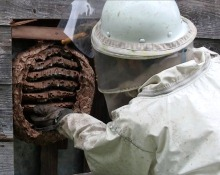
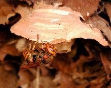
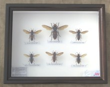

スズメバチの種類
スズメバチの種類についてですが、スズメバチについてどのくらいご存知でしょうか？
ハチはハチでも、ハチの仲間というのは昆虫界ではものすごく種類がたくさんいます。
よく私たちが「スズメバチ」と呼んでいるハチは、ハチ目のスズメバチ科のスズメバチ属に入るハチたちです。
※表記はこのようになっています。
名前
（学名）
スズメバチ科
|スズメバチ亜科
|スズメバチ
(Vesiane)
スズメバチ属
(Vespa)
スズメバチ属
(Vespula)
スズメバチ属
(Dolichovespula)
他にも似たようなハチでは、クロスズメバチ属やホオナガスズメバチ属という種類もいます。
ちなみに、クロスズメバチというのは、長野県ではよく蜂の子としてよく食用にされているハチです。
スズメバチに比べもっと身体が小さく、そんなに攻撃性はありません。
スズメバチ属の仲間
ではスズメバチ（属）の種類にはどんなものがいるのかといいますと、スズメバチ（属）には以下の7種類のスズメバチが入ります。
スズメバチ属(Vespa)
- ・ オオスズメバチ
（Vespa mandarinia japonica Radoszkowski） - ・ ヒメスズメバチ
（Vespa ducalis Buyssoni） - ・ コガタスズメバチ
（Vespa analis Fabriciusi） - ・ キイロスズメバチ
（Vespa simillima xanthoptera Cameron） - ・ モンスズメバチ
（Vespa crabro flavofasciata Cameron） - ・ チャイロスズメバチ
（Vespa dybowskii Andre） - ・ ツマグロスズメバチ
（Vespa affinis affinis L.）
他の種類のスズメバチ
参考までに、クロスズメバチ属やホオナガスズメバチ属には以下のようなスズメバチが含まれます。
クロスズメバチ属(Vespula)
- ・ クロスズメバチ
(Vespula flaviceps Smith) - ・ シダクロスズメバチ
(Vespula shidai Ishikawa et al.) - ・ キオビクロスズメバチ
(Vespula vulgaris L.) - ・ ツヤクロスズメバチ
(Vespula schrenckii Radoszkowski) - ・ ヤドリスズメバチ
(Vespula austriaca Panzer)
ホオナガスズメバチ属(Dolichovespula)
-
生け捕り捕獲など
 -
種類や生活史・巣の場所等
 -
被害者や対策・対応等

-
すずめばちやについて
